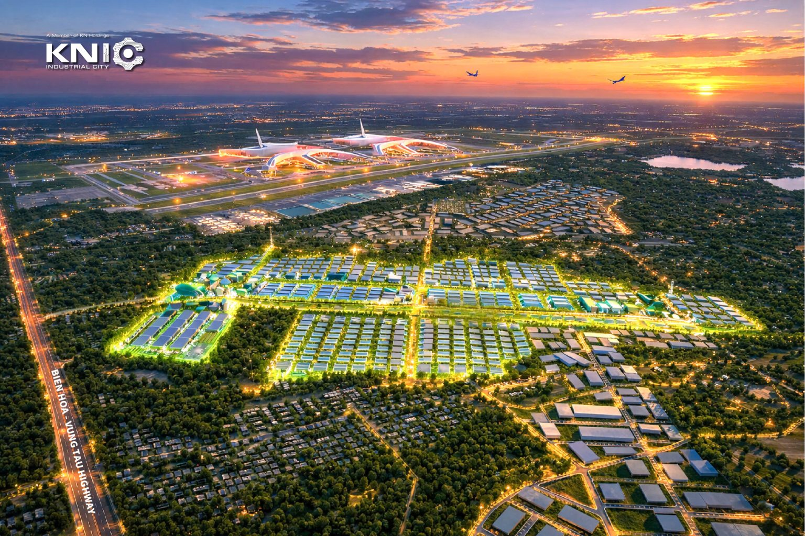
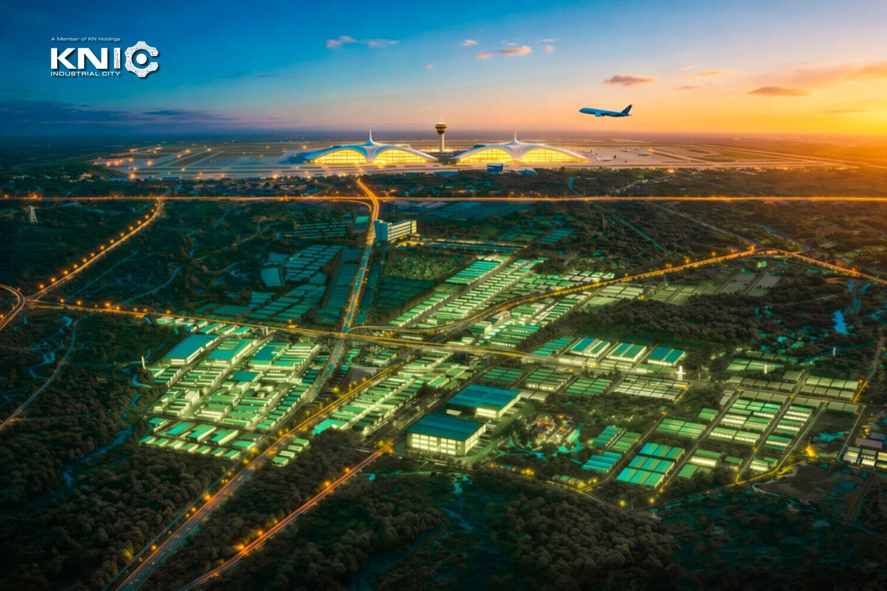

01 / CONNECTIVITY
Vị trí & kết nối
Tiếp cận mạng lưới giao thông, sân bay và hệ sinh thái sản xuất vùng Đông Nam Bộ.
Từ lợi thế vùng Long Thành, khám phá hai không gian công nghiệp trong hệ sinh thái KNIC và tìm giải pháp phù hợp với kế hoạch đầu tư của doanh nghiệp.
Năm góc nhìn chính khi đánh giá một địa điểm đầu tư. Phần thông số và cam kết kỹ thuật sẽ được cập nhật bằng hồ sơ KNIC phê duyệt.
Tiếp cận mạng lưới giao thông, sân bay và hệ sinh thái sản xuất vùng Đông Nam Bộ.
Định hướng quy hoạch linh hoạt cho nhiều mô hình sản xuất và chuỗi cung ứng.
Các hạng mục kỹ thuật được trình bày theo nhu cầu vận hành thực tế của nhà đầu tư.
Tích hợp tư duy sử dụng tài nguyên hiệu quả và môi trường phát triển dài hạn.
Điểm kết nối thông tin, khảo sát địa điểm và trao đổi giải pháp triển khai.
Chọn khu phù hợp để xem hướng tiếp cận ban đầu. Nội dung ngành nghề dưới đây là gợi ý cấu trúc cho bản demo.

PHỐI CẢNH KNICĐịnh hướng tiếp cận doanh nghiệp công nghệ cao và các ngành sản xuất có giá trị gia tăng, với nhu cầu hạ tầng và dịch vụ chuyên sâu.

PHỐI CẢNH KNICKhông gian phát triển cho doanh nghiệp tìm kiếm kết nối sản xuất, logistics và phương án mặt bằng phù hợp với từng giai đoạn mở rộng.
Hình dung cách hai khu công nghiệp kết nối với các đầu mối giao thương quan trọng của khu vực.
Ba hướng trao đổi ban đầu giúp nhà đầu tư xác định loại mặt bằng và mức độ tùy biến cần thiết.
Cho doanh nghiệp chủ động thiết kế và phát triển cơ sở sản xuất theo phương án đầu tư.
Thảo luận nhu cầu sử dụng, quy mô vận hành và thời điểm cần đưa cơ sở vào hoạt động.
Trao đổi yêu cầu công năng, thông số kỹ thuật và khả năng thiết kế giải pháp riêng.
Hình thức sản phẩm và điều kiện cung cấp sẽ được xác nhận theo tài liệu chính thức của KNIC.
Chọn khu công nghiệp và nhu cầu của bạn. Bản demo này mô phỏng bước tiếp nhận; thông tin chưa được gửi đến KNIC.